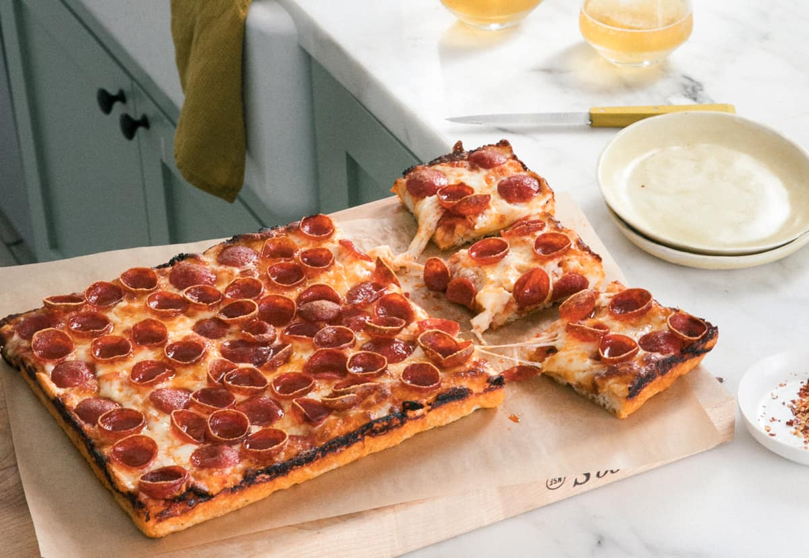

Detroit Style Pizza

A recipe for one of the lesser appreciated styles of pizza.
A Detroit Style pizza is known for it's fluffy crust and crispy cheese edges. The minimal amount of time necessary to prepare to recipe is 4 hours, so you will need to plan ahead.
Ingredients
- Flour
- Yeast
- Salt
- Garlic
- Italian seasonings
- Can of crushed tomatoes
- Cheese of choice
- Toppings of choice
Directions
- Add you yeast and sugar to warm water to ensure that yeast is still active
- Mix your flour and salt together and add water yeast mixture. There should be no dry flour remaining
- Let rest for 15-25 minutes
- Knead the dough for 5-10 minutes. You should feel changes in the dough over time
- Add needed dough to a greased bowl, cover and allow to rise at room temperature for 1.5 hours
- Stretch dough out to you desired deep pan and allow to rise for 1 hour
- While the dough is rising, prepare your cheese(if necessary) and tomato sauce. Also preheat your oven to 425 degress F
- For tomato sauce, add chopped garlic to hot pan containing olive oil
- Allow Garlic to cook for a little while but to long
- Add your Italian seasonings and salt to taste
- Cook your dough in the over for approx. 12 minutes. Dough should be done at this point
- Add your sauce and cheese, and toppings to your pizza. MAke sure to add cheese all the way to the edge of the pan to get the signature crispy-cheesy edges
- Cook under the broiler until you are satisfied with the cheese.